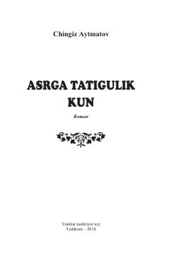

ATInsoniylik, xotira va koinot miqyosidagi ma'naviy izlanishlar haqidagi chuqur falsafiy roman.
Ushbu roman insonning o'zligini anglashi, ma'naviy poklanish va tarixiy xotira mavzularini qamrab oladi. Yozuvchi real hayotiy voqealarni rivoyatlar va fantastik syujetlar bilan uyg'unlashtirib, insoniyat oldida turgan global muammolarni Edigey Bo'ron taqdiri orqali ochib beradi.